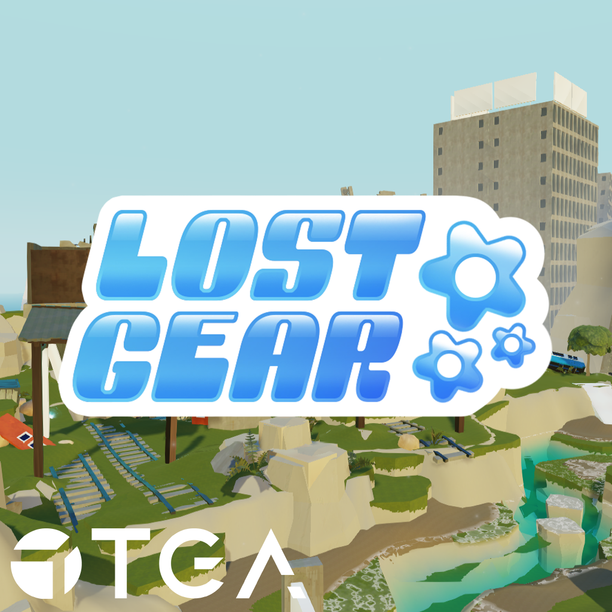

Overview
Lost Gear is a soulslike action-adventure game inspired by Another Crab’s Treasure. Set in a post-apocalyptic world ruled by charming but dangerous robots. You are on a mission to rescue your captured buddy from the mysterious Kordinator. To reach them, you must explore broken-down environments, battle through armies of hostile robots, collect scrap, unlock new abilities and grow stronger with every encounter. In a world built from rust, ruins and forgotten technology, every fight brings you one step closer to uncovering the truth and saving your friend.
